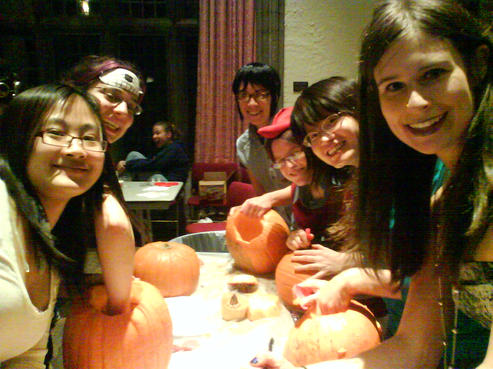
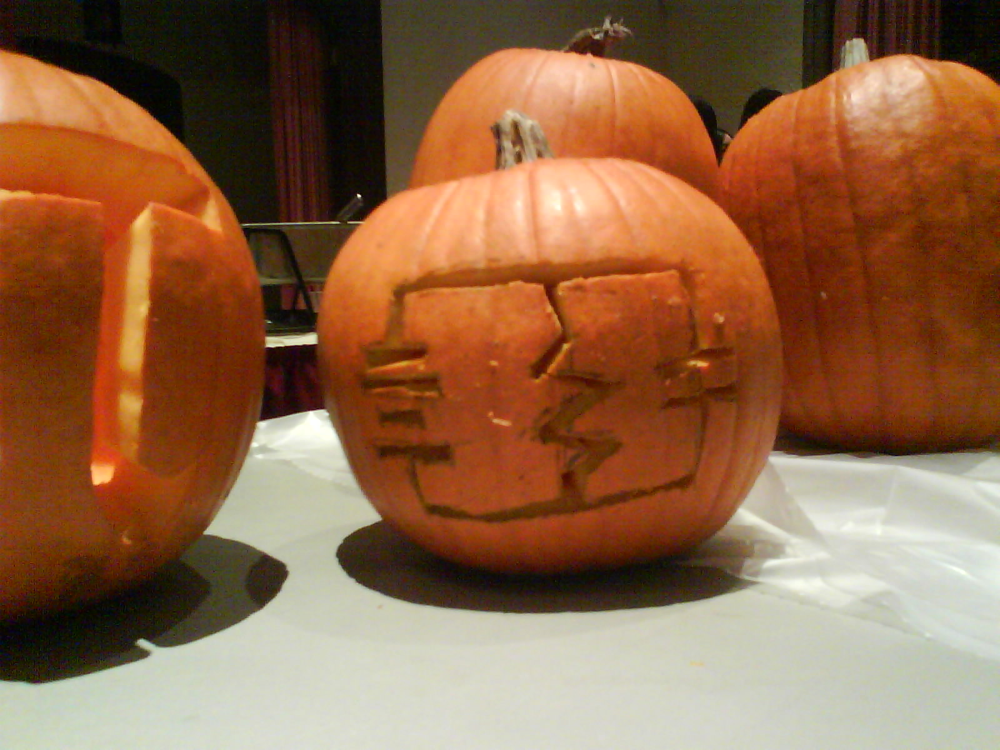
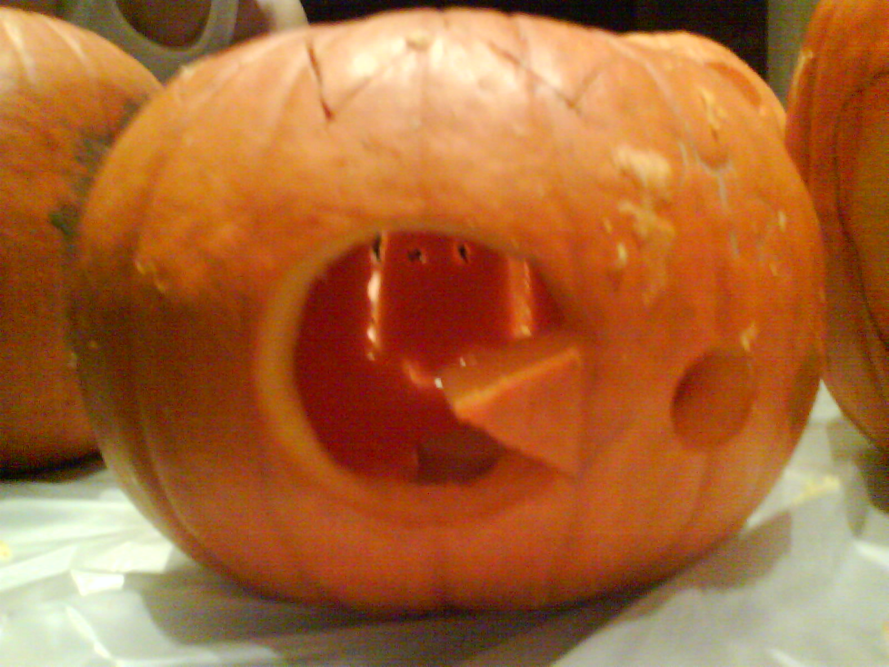
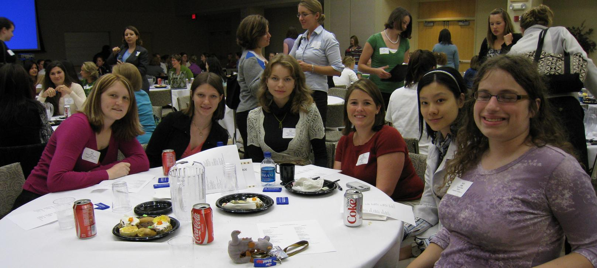
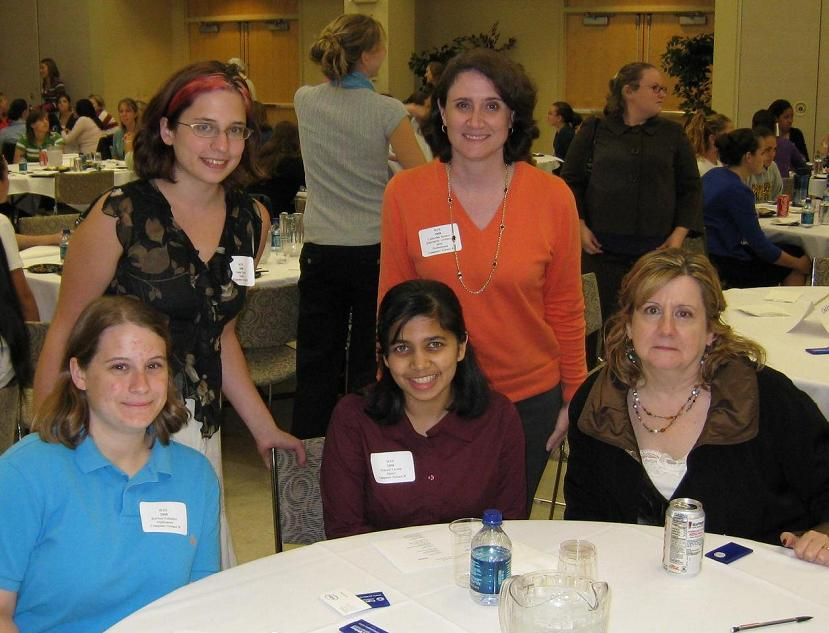

Ongoing & Upcoming Events
For ongoing & upcoming events check out our homepage. and calender!
Past Events
Outreach - Science Day
WiCS members introduced a class of third graders to Computer Science using Python Logo. By the end of the class, they were using functions and loops
Outreach - Tech Girls
On Saturday April 4th WiCS members ran an hour long workshop for local middle schoolers showing them how awesome computer science is using Alice.
Outreach - Robots
WiCS members taught a group of 16 girl scouts basic robotics concepts using lego mindstorms
Circuit Cookies
Dec 8th from 8pm to 9pm
Decorating cookies with WECE. We'll be in the WECE lounge in Atwater Kent.

CS Dept XMas Party
Dec 9th from 4pm to 6pm in the 3rd Floor lounge
There will be food, merriment, games and an obnoxious christmas sweater contest

GNO Pumpkin Carving
  
WIN A term 2008
A fantastic turn out of 8 WiCS members and 3 professionals

Cluster A

Cluster B
Lounge Cleaning Party
The lounge is now set up! There are XKCD comics everywhere along with food and a futon.

Bootstraping Meeting
Read minutes from the meeting.
Welcome BBQ
The barbeque was a smashing success. The old WiCS members, freshmen and professors mingled together, enjoyed the beautiful weather and the delicious food. This was our first joint event with WECE Women in Electrical Compuuter Engineering) and this would be the start of a long lasting relationship with them.
Speaker - Lynn Andrea Stein
Tuesday, April 15 at 7pm in FLAUD
Presented by WPI ACM and WiCS
Von Neumann serial computation has been our field's central metaphor. It has even influenced
how we think brains work. But the sequentialist metaphor isn't right for brains.
It isn't even right for what computers do. Instead, computation arises over a community
of interacting entities.
When we shift our fundamental metaphor, it changes the way we think about computation.
It changes what we teach our students. And it changes the ways in which we think about thinking itself.
Outreach - Bootstrap Programming
WiCS members members taught video game programing to local middle schoolers in a nine-week after school program run by Citizen Schools. We hoped inspire the students to explore technolgy on their own and to set a strong positive female role model of women in computer science.
Networking - Google
This was one of WiCS's first professional & networking events. Engineers from Google came to share some of their knowledge (and T-Shirts!) with WiCS members over snacks.